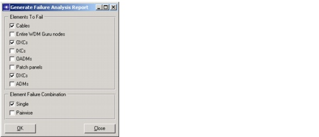
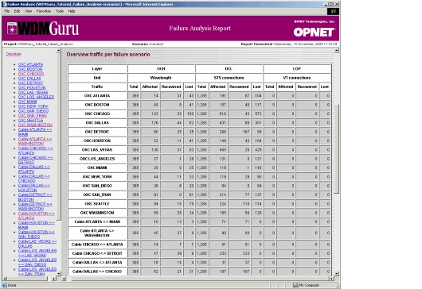
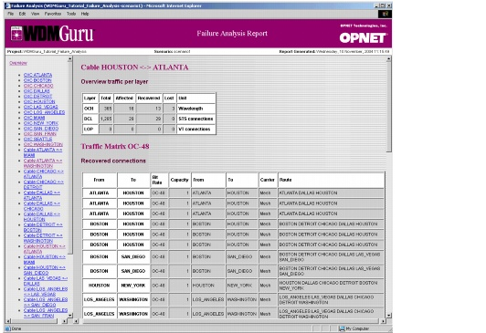

Failure Evaluation > Failure Analysis Report
Failure Analysis Report
Within the Failure Analysis mode of SP Guru Transport Planner, you can study the impact of a specific set of failures and their effects on traffic at the different layers. Instead of defining the failures manually, you can also generate a web report with an overview of all specified failures and their impact. To generate this type of report, choose Info > Generate Web Report > Failure Analysis Report.
Figure 14-10 Generate Failure Analysis Report Dialog Box

The Generate Failure Analysis Report Dialog Box enables you to select the failure scenarios to include in the report. You can select the Elements To Fail, which list all the equipment types modeled in SP Guru Transport Planner. You can select one or more elements to fail; you can also select single or pairwise failures. When you click OK, SP Guru Transport Planner runs a failure analysis for each element (for single failures) or combination of elements (for pairwise failures) of a selected type.
For example, suppose you select Cable and OXC elements (under Elements to Fail) and Single and Pairwise (under Element Failure Combination). In this case, the set of considered failure scenarios consists of:
Note—An "Entire SP Guru Transport Planner node" failure implies the failure of all equipment elements in that node.
The resulting report includes an overview of lost and recovered connections for each of the considered failure scenarios, as well as an overview of all failure scenarios. The generated report contains an overview page, which includes an overview of the considered failure scenarios and the amount of lost and recovered traffic per failure scenario (as shown in Figure 14-11). This allows you to identify the most critical failure considered by the failure analysis.
Figure 14-11 Failure Analysis Web Report: Overview

You can click on each individual failure scenario listed in the left frame of the web report. Each failure-scenario page gives a detailed overview of the amount of traffic that is affected and recovered at each layer (as shown in Figure 14-12). Each failure-scenario page shows the lost connections, recovered connections, and the new paths on which the recovered connections are routed.
Figure 14-12 Failure Analysis Web Report: Individual Failure Scenario

| Home © 1987-2007 OPNET Technologies, Inc. All Rights Reserved. This software may be covered by one or more U.S. Patents. See complete patent notice in the Legal Notices section. OPNET Support Center |